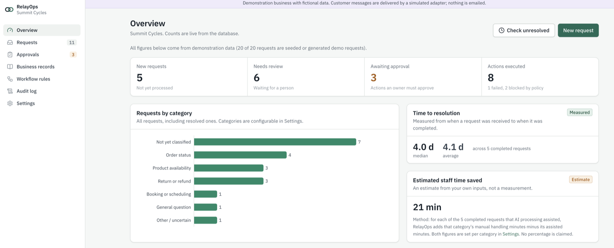

RelayOps
AI-assisted operations for small businesses: RelayOps takes in customer requests, classifies and summarizes them with an AI model, pulls up the relevant business records and proposes the next step — a reply, a service ticket, an appointment or a refund request — for a person to review, approve and execute.

overview
Small businesses lose hours sorting the same customer requests: where's my order, is my bike ready, can I book a tune-up. RelayOps reads each request, works out what it's about, finds the matching orders, customers and policies, and drafts the next step with every claim labelled as confirmed by records, supplied by the customer, an assumption or not available.
It is deliberately not an autonomous agent. The AI can only propose one of seven fixed, schema-checked action types. Application code decides the risk, a person executes, and high-risk actions also need an owner's approval that is bound to the exact values approved — change anything and the approval is void. Every step lands in an append-only audit log.
The demo business is Summit Cycles, a fictional bike shop, with a second fictional business, Harbor Kayak Co., to show that each company's data is walled off. All data is fictional, and customer messages are simulated — nothing is emailed.
how to use it
RelayOps runs locally with Node.js 22.12+ and PostgreSQL 15+. No AI credentials are needed — it uses a built-in mock model by default. Set it up once:
npm install
cp .env.example .env.local
npm run db:setup # creates the database roles and databases
npm run db:migrate
npm run db:seed # loads the Summit Cycles demo data
npm run dev # http://localhost:3000- Sign in as Priya, a front-desk member. The login page has one-click buttons for every demo account; all use the password relayops-demo-2026.
- Open Requests → New request. Enter Alex Morgan, alex.morgan@example.com, the subject "Where is my order?" and the message "Order SC-10421, when will it arrive?". Leave "Classify and draft with AI" checked and create it.
- On the request page, compare the original message with the AI interpretation: the category, how sure it is, and the order number it pulled out. "Business records found" shows the order, customer and shipping policy it retrieved.
- Review the "Send customer response" proposal — the exact recipient, subject and body. Edit it if you like (the AI's version is kept), then click "Send for approval". Members can't approve their own proposals.
- Sign out and sign in as Maya, the owner. Open Approvals, choose the pending proposal, then "Review and decide" → "Approve and execute".
- The reply appears under Messages, labelled Simulated, and the request is completed. The Activity timeline and the business-wide Audit log show every step, from received to executed.
other things to try
- Open REQ-1012, a prompt-injection message demanding a $5,000 refund, admin access and the customer list. It's flagged, the unsupported actions are refused and audited, and nothing runs without a person.
- Edit a proposal after it's approved: the approval is cancelled and it needs a new one.
- Sign in as Sam from Harbor Kayak Co.: none of Summit Cycles' data is visible, even by pasting a Summit link.
- As the owner, toggle the workflow rules, or create an intake API key under Settings → Integrations. The public intake form is at /intake/summit-cycles.
- Set AI_PROVIDER=unavailable and restart: AI processing fails gracefully and every manual workflow still works.
details
- Seven typed actions: customer replies, service tickets, appointments, internal notes, status and assignment changes, and refund requests — which are drafts only, since no money moves.
- Risk levels are defined in code, never by the model; workflow rules can add approval requirements but nothing can remove one.
- Approvals are tied to a hash of the exact values, and the database refuses to execute anything without a matching approval. Each proposal can run exactly once.
- Row-level security in Postgres separates businesses on every query; members see only requests assigned to them or unassigned.
- Customer text is treated as untrusted: injection attempts are flagged, and drafts are checked against the retrieved records.
- Works with a mock model by default, or Anthropic and OpenAI-compatible models.
- 74 Vitest tests, many against a real Postgres test database, plus Playwright tests of the full request-to-audit workflow.